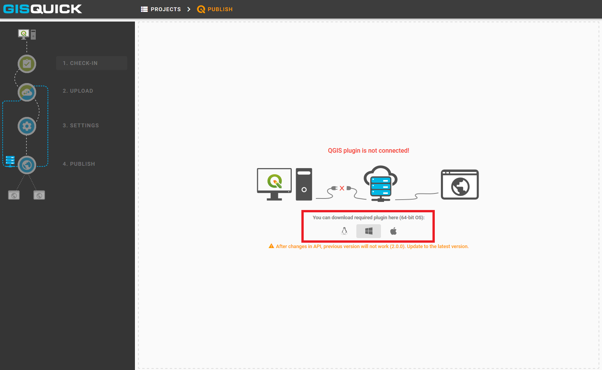
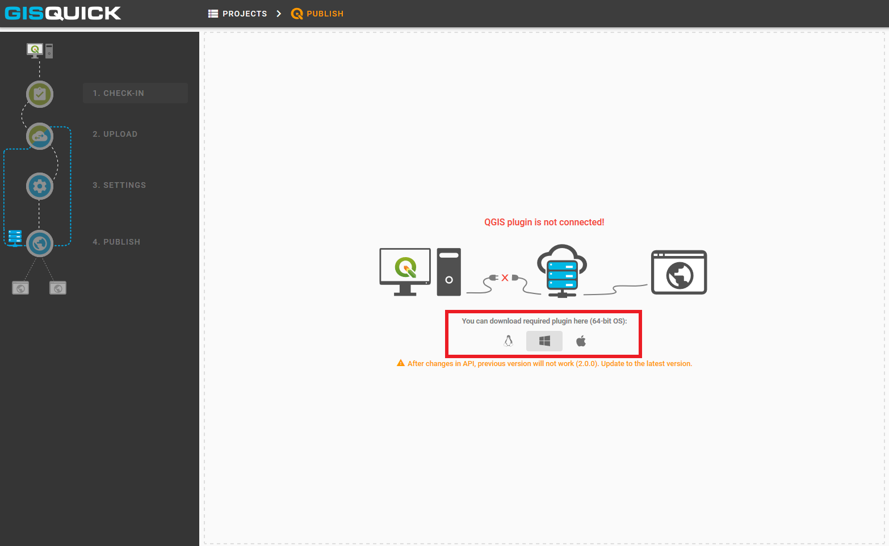

Publishing¶
Preparing project¶
Firstly, click on Publish button which is situated next to the
Upload button in the user’s project page. It allows publishing a project
directly from QGIS. In order to publish a project, the QGIS plugin needs to be
installed and connected. The required plugin is available to download for 64-bit OS
(Windows, Linux, Darwin).
 

{kind=link}
Once the download is complete, open QGIS and find tab Plugins and
choose Manage and install plugins. Continue to the Install from
zip tab, set path to the downloaded zip file and hit the install button.

When the installation is finished, it is possible to check new acquisition in the list of installed plugins. Also, a new icon appears in QGIS toolbar. Next step is to prepare the project in QGIS.

Save the project before the next step.
Important
 When using flat files or file-based databases as
data stores it is highly recommended to save all the files (data and QGIS
project) in the same directory or its subdirectory. QGIS project must be
set up to use relative paths (see Project Properties). An
error warning appears otherwise (see figure below).
When using flat files or file-based databases as
data stores it is highly recommended to save all the files (data and QGIS
project) in the same directory or its subdirectory. QGIS project must be
set up to use relative paths (see Project Properties). An
error warning appears otherwise (see figure below).
When using any kind of authentication (databases, web services) it must be ensured that the server used for publishing will have access rights to such data sources.

Uploading project¶
Once the project is ready, click on Gisquick plugin logo. For the very first time, Gisquick asks the user to fill in the connection and Gisquick login details.

After succesful check-in to the Gisquick server, the project is screened in user’s experimental publish window. Notice, that the Gisquick 2 icon stays active in QGIS until the user clicks on it again and interrupts the connection with the server.

The first section called CHECK-IN consists of two tabs and represents
an overview which is designed to easily check on loaded layers. It is not
possible to make any changes within these tabs. Eventual corrections
could be made back in QGIS.
First tab General includes some fundamental information about user’s
project, e.g. map projection, units, predefined scales or print templates.
Second tab Layers contains a list of layers with additional information.
When the project is checked and ready, proceed to the Upload section.
Two windows will split the screen: local project files are listed in the left,
intended server folder appears in the right one. Click on UPLOAD FILES button.
{kind=link}